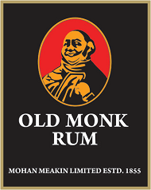

- HOMEPAGE
- BRAND
- RUM
- COCTAILS
- DISTRIBUTORS
- CONTACT
-

in the world!
Old Monk Rum is quality dark rum made by traditional method, matured in oak barrels for a
minimum 7 years. This organic beverage contains 42.8% alcohol. It has a smooth creamy
consistency. Its taste has notes of caramel, chocolate with a hint of vanilla flavor creating a
truly pleasant harmony.
You can either stick to sipping pure rum to enjoy it neat or you can choose to use your rum for
cocktails. With the first drop of Old Monk Rum the sheer aroma of distilled sugar cane grown
in lush green fields of India enlivens the legend of the drink of Gods and Lords.
Old Monk Rum is available at larger chain grocery stores and specialized stores for alcoholic
beverages as well in a lot of Asian restaurants.